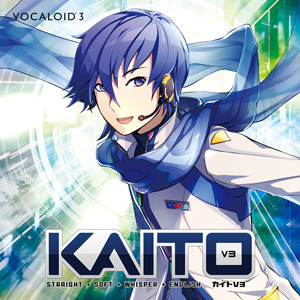
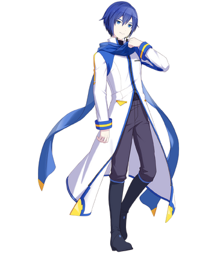
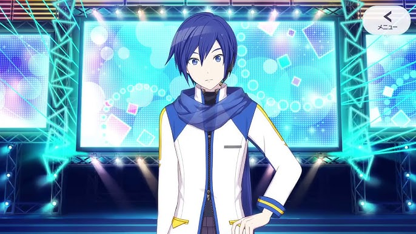

| Released | |
|---|---|
| Developer | Crypton Future Media |
| Voice Provider | Naoto Fūga |
| Genre | Vocaloid • J-pop • Ballad • Any |
| Character Age | 20 (Fan-accepted) |
| Years Active | 2006 ‐ Present |
Origin & Development
KAITO was released on by Crypton Future Media — before Hatsune Miku, before the big Vocaloid boom, before any of it. His voice was provided by Naoto Fūga, and honestly the richness he brought to KAITO is something special.
Here's the wild part though — he barely sold on release. Like, around 500 copies. Crypton almost pulled the plug. Then Miku happened, the fandom exploded, and people went back and found KAITO. He was essentially rescued by the community, which makes loving him feel even more meaningful, you know?
"KAITO was almost the end of the story — instead, he became the beginning of everything."
Versions & Updates
He's come a long way since 2006. Each update gave him more range and honestly made him sound better and better.
- KAITO V1 (2006) : Rough around the edges but full of character. A cult classic for those who know.
- KAITO V3 (2013) : The real glow-up. Came with Straight, Soft, Whisper, and Vivid voice banks. Producers went wild with this one.
- KAITO NT (2022) : AI-assisted and honestly kind of scary how natural he sounds now. Still unmistakably KAITO though.
Cultural Impact
KAITO has this quiet but massive presence in the fandom. He's been around the longest, so there's a lot of history and nostalgia attached to him. Old-school fans especially have a soft spot for him that goes really deep.
Fandom gave him this gentle big-brother personality over the years, which fits perfectly. And then there's the ice cream thing. Nobody knows exactly where it started but at this point it's completely canon in spirit. You cannot separate KAITO from ice cream. It just is what it is.
Concerts & Performances
Like the rest of the Crypton crew, KAITO performs live as a holographic projection at Magical Mirai and Miku Expo events. His ballad performances are genuinely something else live — there's a whole arena singing along to a hologram in a blue scarf and somehow it hits harder than it has any right to.
Watch a Live Concert Clip
Popular Songs
-
Cendrillon ‐ By Biniou-P. A duet with Hatsune Miku and one of the most covered Vocaloid songs ever. KAITO's voice against Miku's is just perfect. Start here if you're new.
Listen on YouTube!
-
Cantarella ‐ By kz (livetune). Dark, dramatic, theatrical. KAITO plays a manipulative noble and his voice is made for this. An absolute classic.
Listen on YouTube!
-
Karakuri Pierrot ‐ By 40mP. Unrequited love, gentle delivery, and it will wreck you emotionally. You've been warned.
Listen on YouTube!
Did You Know?
- KAITO nearly got cancelled after launch — only ~500 copies sold. The fandom literally saved him.
- He predates Hatsune Miku — he's the OG of the Crypton lineup.
- The ice cream obsession has no official origin. It just exists. Accept it.
- His V3 package came with four separate voice banks — Straight, Soft, Whisper, and Vivid. Producers were very happy.
- Cendrillon has been covered so many times it might genuinely be the most reinterpreted Vocaloid song ever.
Gallery




↑ Back to Top
Conclusion
KAITO almost didn't make it. Now he's one of the most beloved Vocaloids in history. That's kind of his whole thing, and it's honestly beautiful. Deep voice, blue scarf, ice cream addiction, and a fanbase that refused to let him go. What more could you want.